私がVB(VB2005)からOpenCVを使うときに使っているクラスライブラリを公開します。
このクラスライブラリは更新する予定がありません。
OpenCV1.1を使用したい場合は、新しいタイプのライブラリを使ってください。
新しいライブラリはOpenCV関係のメニューからOpenCV関係3のページでダウンロードできます。
こちらからどうぞ。
OpenCVのDLLを使うための各種APIや構造体、定数を定義したモジュールと、
VBから使う上で便利な関数郡を定義したモジュールで構成されます。
定義モジュール
(Cv,CxCore,CvType,CxType)
・本クラスライブラリはOpenCVをVB(VB2005)から使うためのものですから、
当然OpenCVがインストールされている必要があります。
・DLLの関数等は基本的にC用の関数名と同じ名前で定義しています。
・マクロやインライン関数で定義されている関数等は、
同等の機能を提供するVB製関数に置き換えられています。
できるだけ同じ結果になる様に速度よりも互換性を大事にしています。
・関数の別名登録（マクロにて名前が変えられているだけのような定義）は
一部のみしかサポートされていません。
・API定義はOpenCVのソースファイル(ヘッダファイル)から
機械的に変換して作ってあります。
（意味のない定義になってるのもありますが、気にしてはいけません）
・構造体のポインタなどは構造体とIntPtrの両方、
文字列はString/バイト配列/IntPtr、など複数の型で定義してあります。
これはNULL(IntPtr.Zero)を指定できるようにするためです。
・定義については、間違いもあるでしょう(^^;
ユーティリティモジュール
(CvUtility)
・OpenCVLibで定義されているAPIを使うときに便利な関数やラッパーなどを提供します。
・基本的にこのモジュールを使わなくともなくともOpenCVは使えますが、
アンマネージとマネージの橋渡し処理を毎回書いてると面倒です。（＾＾；
| リリース | ライブラリ | ソース | 備考 |
|
2007/01/13 |
OpenCVLib20070113.lzh | ←ソース含む | テスト版 |
|
2007/04/17 |
OpenCVLib20070417.zip | OpenCVLib20070417SRC.zip | テスト版を全面改定 |
|
2007/04/20 |
OpenCVLib20070420.zip | OpenCVLib20070420SRC.zip | cvCreateVideoWriterのサンプル追加 |
|
2008/04/08 |
OpenCVLib20080117.zip | OpenCVLib20080117SRC.zip | CvCam関係を追加 |
|
2008/07/29 |
OpenCVLib20080729.zip | OpenCVLib20080729SRC.zip | CvCam関係を追加 |
|
2008/08/19 |
OpenCVLib20080819.zip | OpenCVLib20080819SRC.zip | cvSobel関連のサンプル追加 |
|
以後更新予定なし 新しいタイプのライブラリを利用して下さい。こちらからどうぞ。 |
|||
使用するだけならライブラリ版を適当なフォルダに展開し、
VB2005/VB2008からDLLを参照設定して下さい。
ソース版にはライブラリとサンプルプログラム、及び、
OpenCVのヘッダファイルからVB2008用の定義ソースを自動的に作り出すツールの
全ソースが含まれています。
（OpenCVのバージョンがあがった時、楽に対応できるようにするため自動生成するようにしています）
ライセンス的には、OpenCVのライセンスに従います。
(GPLではないので使用してもソース公開の義務はないと思います。気になる方は自分で調べてください。)
OpenCVを使用したいプロジェクトにて「OpenCVLib.dll」を参照設定して下さい。
OpenCVLibクラスライブラリが使えるようになります。
使うにはモジュールの先頭で、
Imports OpenCVLib
とすると便利でしょう。
具体的な使い方についてはサンプルプログラムを参考にして下さい。
関数の引数等は基本的にC言語からの使い方と同じですが、
アンマネージ領域とのやり取りに若干注意が必要です。
OpenCVLibクラスライブラリを使ったサンプルを紹介します。
このサンプルのソースはソースアーカイブに含まれています。
各サンプルの操作方法や詳細はソースファイルを見て下さい。
できるだけコメントを書いてますんで(^^;
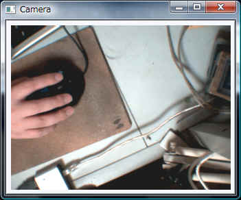
カメラから画像を取り込み、ウィンドウに表示するサンプルです。
このサンプルではVBのフォーム機能を使用していません。コンソールアプリとなっています。
よくあるOpenCVのサンプルをVB2005で作ったものです。
終了させる時はESCキーを押して下さい。
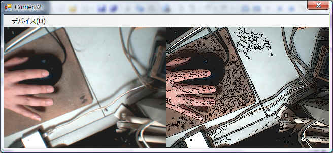
カメラから画像を取り込み、
元画像と簡単な画像処理を行った映像をフォーム内に並べて表示します。
サンプル「Camera」と違いGUIに積極的にVBの機能を使ってます。
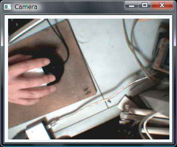
カメラから画像を取り込み、ウィンドウに表示するサンプルです。
高像的にはサンプル「Camera」とほぼ同じですが、
キャプチャ部分にOpenCVの機能ではなくDirectShow(DShowLib)を使ってます。
OpenCVのカメラキャプチャ機能では、キャプチャ条件(サイズ等)を指定できませんが、
DirectShowを直接使う事によりサイズ指定などが可能になります。
画像ファイルを読み込み、ウィンドウに表示するサンプルです。
OpenCVに付属する画像ファイルを表示させます。
インストールフォルダの取得などにユーティリティモジュールを使用しています。
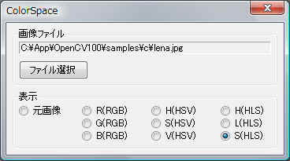
静止画ファイルを読み込み、RGB/HSV/HLSの各プレーンを表示するサンプルです。
インストールフォルダの取得などにユーティリティモジュールを使用しています。
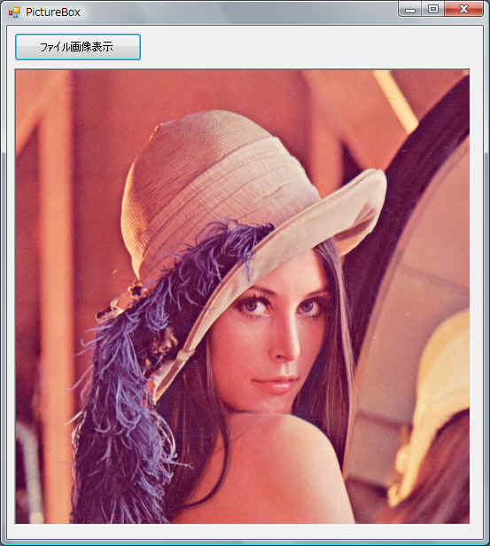
静止画ファイルを読み込み、PictureBox内に表示するサンプルです。
OpenCVのイメージデータ(IplImage)からビットマップを作成します。
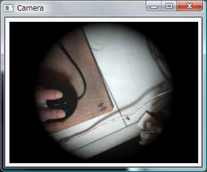
サンプルCameraに画像処理を追加したサンプルです。
イメージデータを配列に読み込みんで処理することにより、
VBでのPixel単位の操作よりもずっと高速に処理できます。
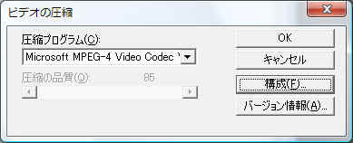
カメラから映像を取り込み、AVIファイルに出力します。
AVIファイルは実行ファイルと同じフォルダに出力されます。
エンコード方式を指定していないので、起動時に上のダイアログでエンコード方式を選択します。
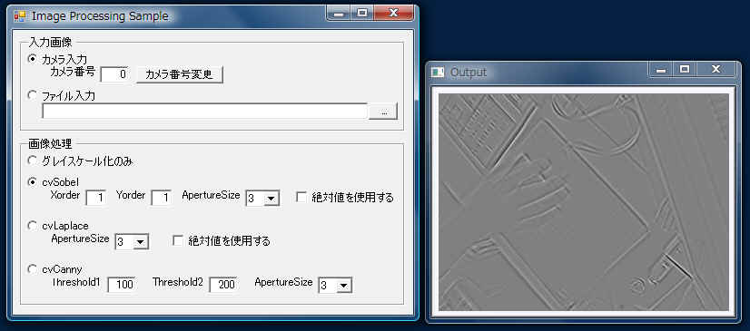
cvSobel、cvLaplace、cvCannyでのイメージ処理のサンプルです。
こちらもOpenCVLibクラスライブラリを使ったサンプルですが、
OpenCV付属の同名サンプルを移植したものです。
元のサンプルコードと比較しやすいように、コメントも含め極力追加・変更していません。
また機能はほとんど同じですが、コマンドライン引数関係は多少省いたり変更したものがあります。
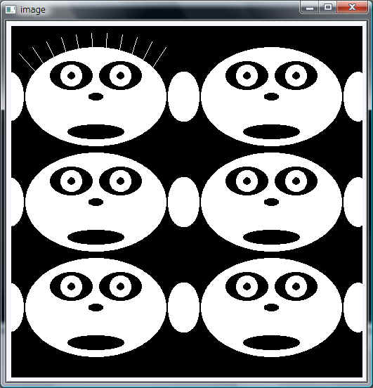
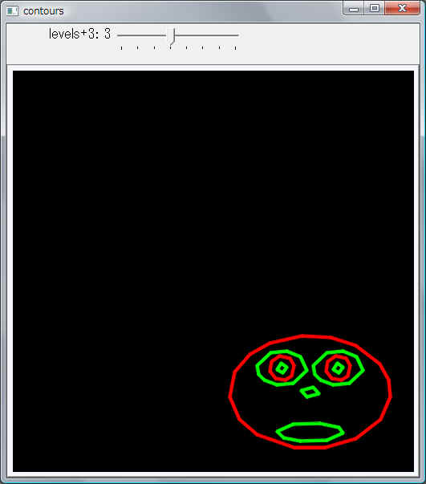
画面に複数の顔を描いて、cvFindContoursにて輪郭線を抽出するサンプルです。
トラックバーの値取得部分が元のサンプルコードと若干異なります。
ユーザがトラックバーを動かした場合、
トラックバー生成時に指定したアドレスに現在の値が自動的に格納(更新)されますが、
アンマネージ領域になるためVBからだと煩雑になります。
そのためコールバック関数(on_trackbar)の引数の値を使うようにしています。
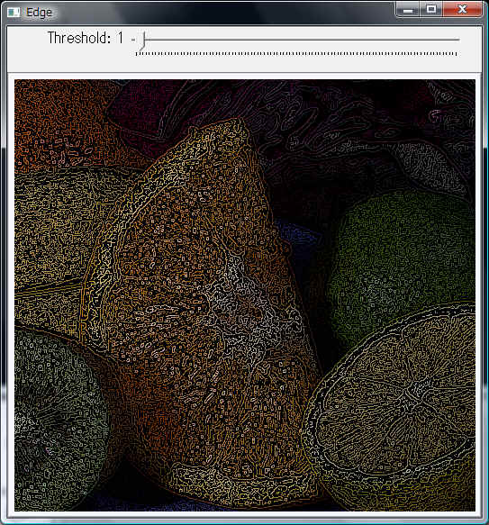
静止画ファイルを読み込み、cvCannyにて縁(輪郭)を抽出するサンプルです。
contours同様トラックバー関連を変更しています。
また引数なしの場合、元ソースではカレントフォルダにあるファイル(fruits.jpg)を
表示しますが、VBからの動作を考慮し、
OpenCVインストールフォルダ下の\samples\c\fruits.jpgを表示するようにしています。
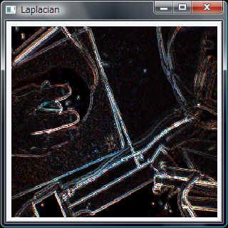
カメラ又は動画ファイルの映像をcvLaplaceによる
ラプラシアンフィルタにかけて表示するサンプルです。
コマンドライン引数の処理が若干異なりますが、
ほぼ元のサンプルコードをVB構文に直しただけで動作したサンプルです。
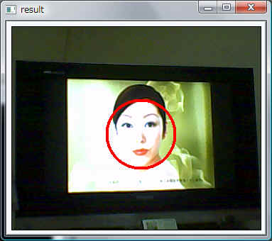
カメラ又は動画ファイルの映像から「顔」を検索するサンプルです。
（上のサンプル画像は、TVをカメラで撮った映像です。
なんかのCMだと思うんですが、学術目的ということで著作権関係はお見逃しを・・・^^;;）
認識に使用する顔の定義ファイルはOpenCV付属のデータを使用します。
ソース内のコメントにも書いてますが、
定義ファイル(xml)をcvLoadで読み込む場合に注意が必要です。
サンプルコードをそのまま移植するとcvLoadでエラーが発生します。
原因及び対策は、、、コメントを見て下さい(^^;
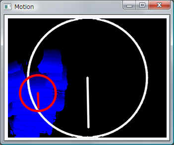
カメラ又は動画ファイルの映像から「動きのある部分」を検索するサンプルです。
見た目がちょっとかっこいいので移植してみただけです。